A/B Test Analysis
2017-07-17
This test was run from 2017-06-30 to 2017-07-17 on enwiki. We have 2 test groups: explore_similar_control, explore_similar_test. We include fulltext search in this analysis.
Fetch data:
SELECT
timestamp,
event_uniqueId AS event_id,
event_mwSessionId,
event_pageViewId AS page_id,
event_searchSessionId AS session_id,
event_subTest AS `group`,
wiki,
MD5(LOWER(TRIM(event_query))) AS query_hash,
event_action AS event,
CASE
WHEN event_position < 0 THEN NULL
ELSE event_position
END AS event_position,
CASE
WHEN event_action = 'searchResultPage' AND event_hitsReturned > 0 THEN 'TRUE'
WHEN event_action = 'searchResultPage' AND event_hitsReturned IS NULL THEN 'FALSE'
ELSE NULL
END AS `some same-wiki results`,
CASE
WHEN event_action = 'searchResultPage' AND event_hitsReturned > -1 THEN event_hitsReturned
WHEN event_action = 'searchResultPage' AND event_hitsReturned IS NULL THEN 0
ELSE NULL
END AS n_results,
event_scroll,
event_checkin,
event_extraParams,
event_msToDisplayResults AS load_time,
event_searchToken AS search_token,
userAgent AS user_agent
FROM TestSearchSatisfaction2_16909631
WHERE LEFT(timestamp, 8) >= '20170630' AND LEFT(timestamp, 8) < '20170718'
AND wiki IN('enwiki')
AND event_subTest IN('explore_similar_control', 'explore_similar_test')
AND event_source IN('fulltext')
AND event_searchSessionId <> 'explore_similar_test'
AND CASE WHEN event_action = 'searchResultPage' THEN event_msToDisplayResults IS NOT NULL
WHEN event_action IN ('click', 'iwclick', 'ssclick') THEN event_position IS NOT NULL AND event_position > -1
WHEN event_action = 'visitPage' THEN event_pageViewId IS NOT NULL
WHEN event_action = 'checkin' THEN event_checkin IS NOT NULL AND event_pageViewId IS NOT NULL
ELSE TRUE
END;Data Cleansing
Deleted 590 duplicated events. Removed 201 orphan (SERP-less) events. Remove 0 sessions falling into multiple test groups.
Data Summary
Test Summary
| Days | Events | Sessions | Page IDs | SERPs | Unique search queries | Searches | Same-wiki clicks | Other clicks |
|---|---|---|---|---|---|---|---|---|
| 18 | 30,699 | 3,686 | 15,547 | 13,092 | 12,532 | 10,617 | 2,554 | 124 |
Number of events
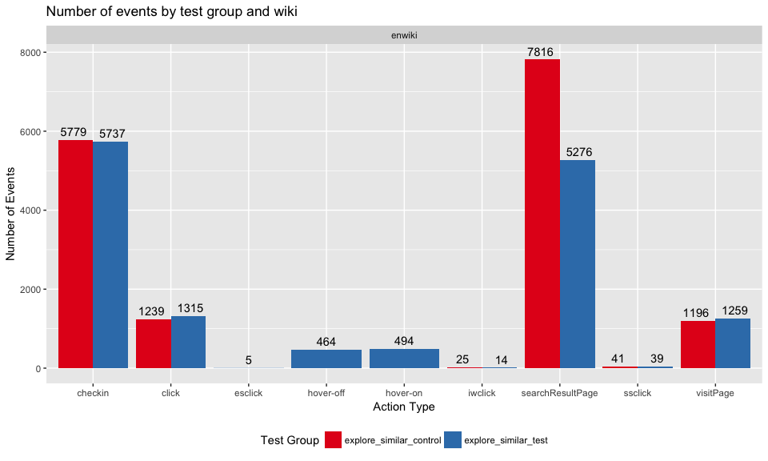
Number of searches
| Test group | wiki | Search sessions | Searches recorded |
|---|---|---|---|
| explore_similar_control | enwiki | 1,863 | 6,262 |
| explore_similar_test | enwiki | 1,823 | 4,355 |
| Total | All Wikis | 3,686 | 10,617 |
Number of searches with n same-wiki result(s) returned
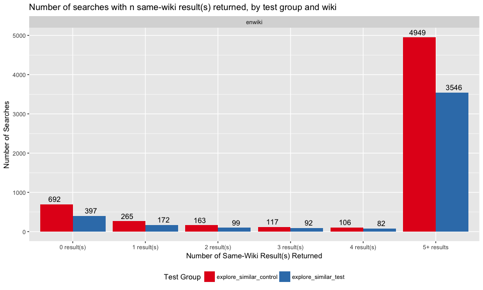
Number of SERPs by offset
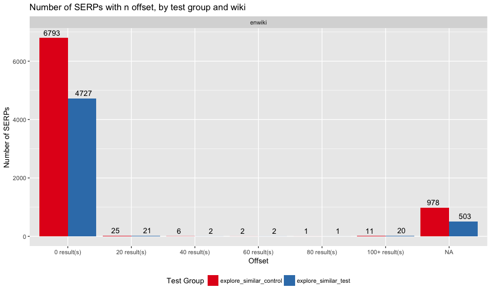
Sister Search
Number of sister search clicks by project
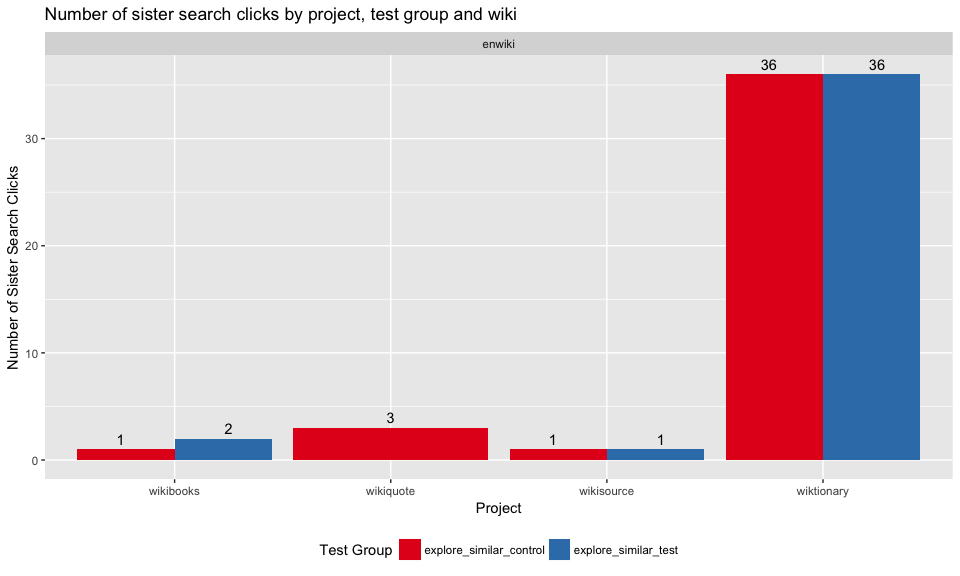
Number of sister search clicks by position
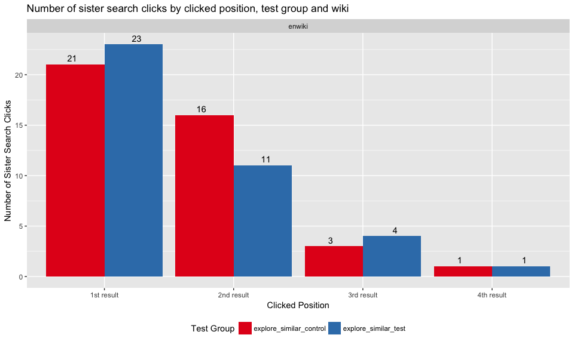
Number of interwiki clicks by position
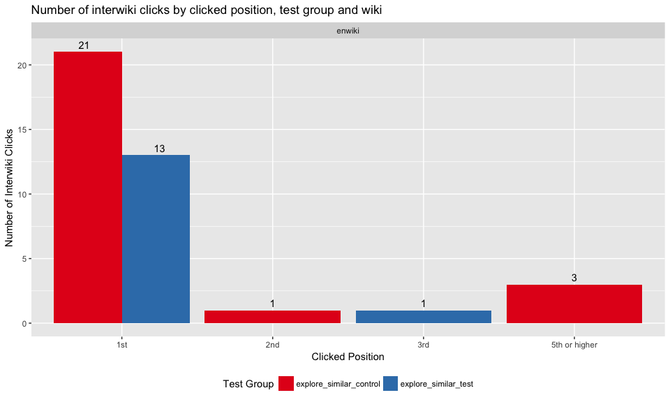
Explore Similar
Number of explore similar clicks by section and clicked position
| 2nd result | 3rd result | Sum | |
|---|---|---|---|
| NA | 1 | 0 | 1 |
| related | 1 | 3 | 4 |
| Sum | 2 | 3 | 5 |
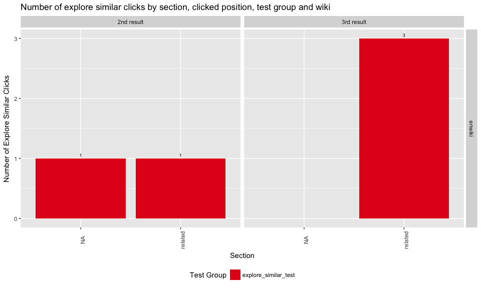
Number of hover-over events by section and number of results
| 0 result(s) | 1 result(s) | 2 result(s) | 3 result(s) | 4 result(s) | 5+ result(s) | Sum | |
|---|---|---|---|---|---|---|---|
| categories | 0 | 16 | 21 | 24 | 27 | 80 | 168 |
| languages | 54 | 12 | 7 | 8 | 5 | 11 | 97 |
| related | 7 | 0 | 0 | 222 | 0 | 0 | 229 |
| Sum | 61 | 28 | 28 | 254 | 32 | 91 | 494 |

Test Metrics
Same-wiki Zero Results Rate
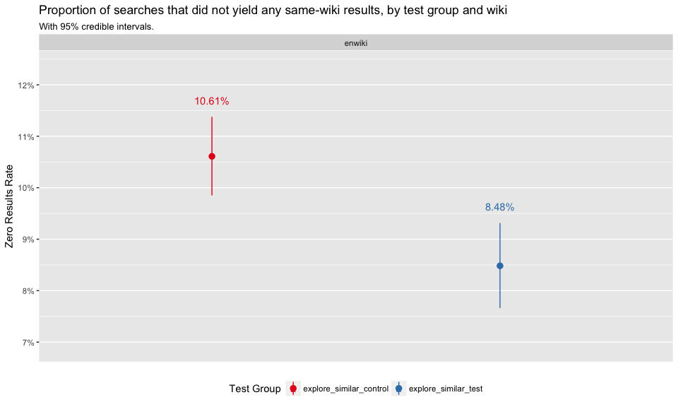
Same-wiki Engagement
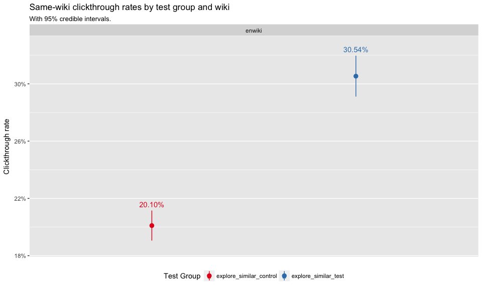
explore_similar_test vs. explore_similar_control 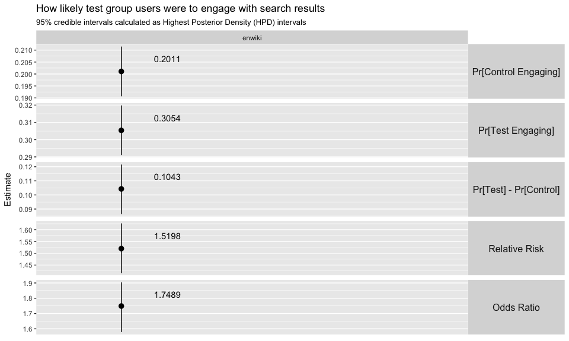
First Clicked Same-Wiki Result’s Position
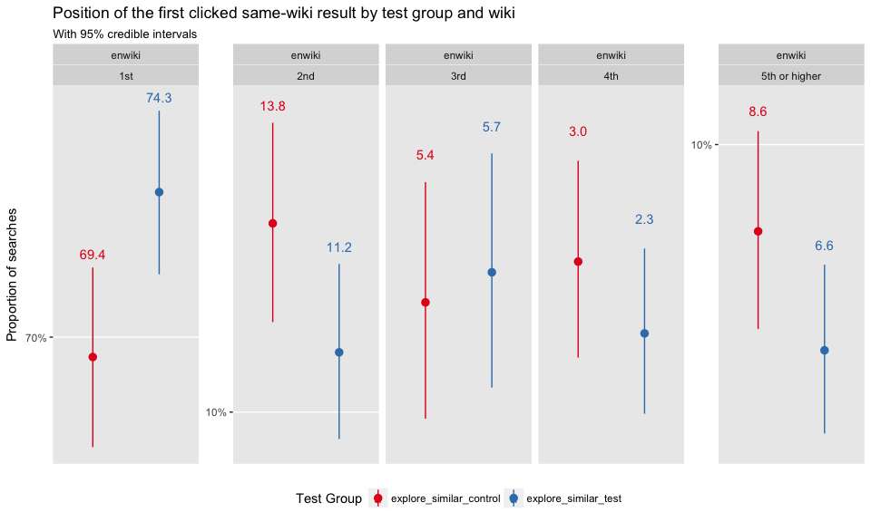
Maximum Clicked Position for Same-Wiki Results
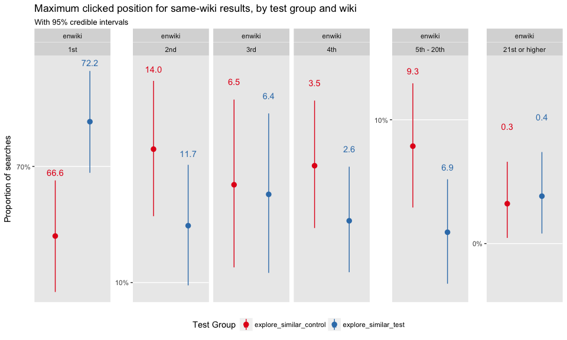
PaulScore
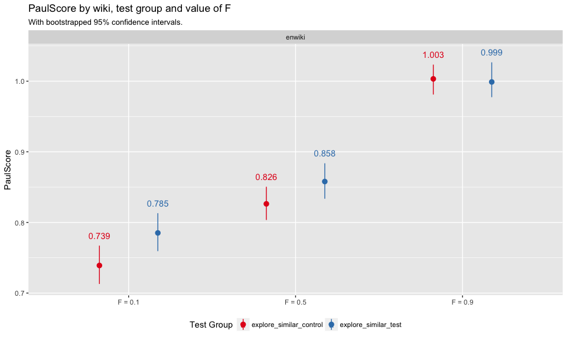
Other Pages of the Search Results
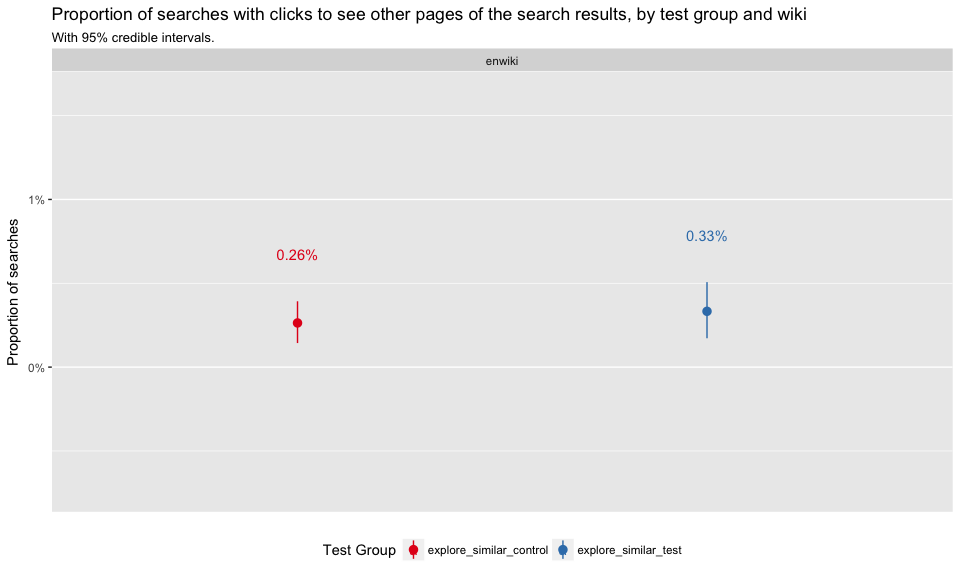
Dwell Time per Visited Page
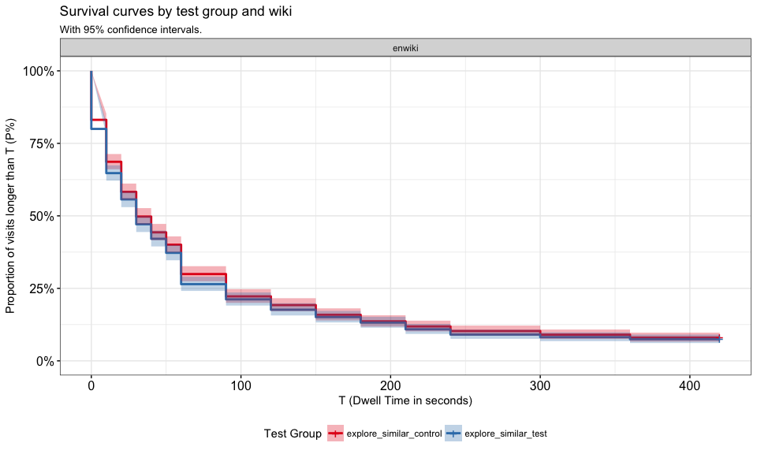
Scroll
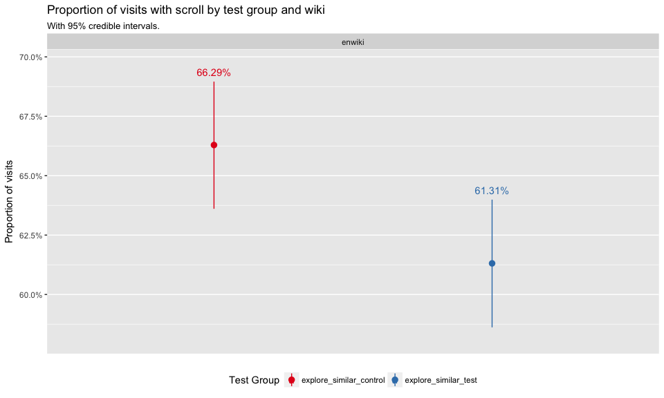